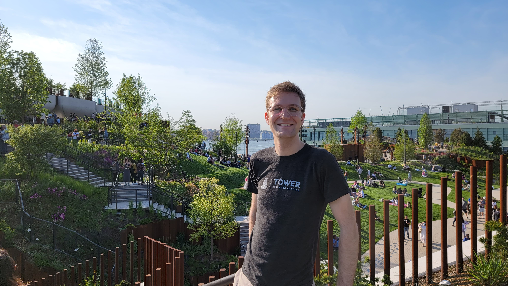
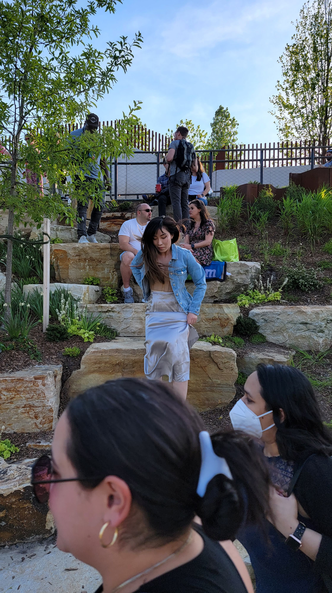
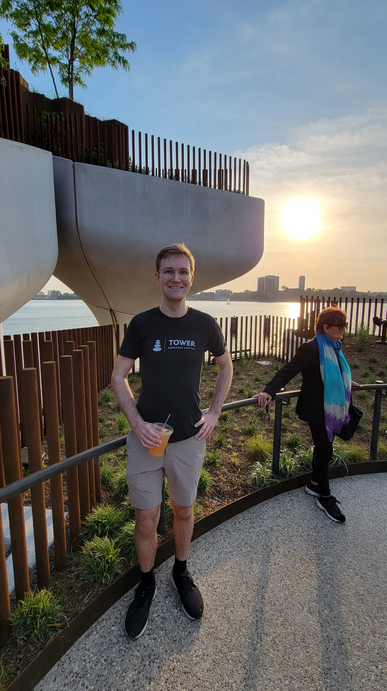
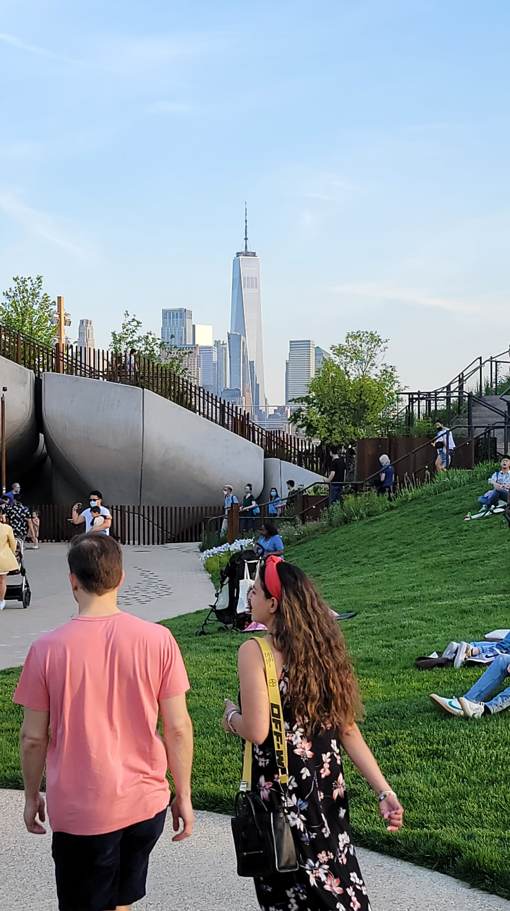

It's hard to believe May is almost over. Let's get on it!
On Monday, I recorded each of the videos for the next 5 weeks of the Solid promotion video shorts. I noticed that this was the first day I recorded videos that was partially cloudy, so unfortunately, some of the scenes have different lighting, but I did get them all done.
I also had a call with someone who goes by "Supertanker" on Twitter. It was quite a frustraiting call. The connection wasn't good and I could only hear about half of what they were saying, but even then, it didn't seem super captivating. They really didn't seem to know what Solid was so I directed them to some links.
Overall, I remember feeling like it was a productive day.
With all the videos recorded, the goal was to edit all 16 episodes I had. I did not accomplish that goal. I got a few of them done, but I don't remember what I did for the rest of the day.
Wednesday was an eventful day. First of all, there was more editing, but again, I didn't get it all done.
The big news story is meeting with David Segura. He's the investor that Sai introduced me to. I didn't know it until I got there, but the meeting place he suggested was right next to the New York Stock Exchange. Like, there was only a Rolex store separating the coffee shop for the NYSE. It didn't affect the meeting, but I just thought it was cinematic to give a startup pitch for a decentralized company in front of one of the largest symbols of centralization.
He was late for the meeting, but I brought my laptop and got some more video editing done while I was waiting. When he finally showed up, I think the pitch went well. I employed a lot of the suggestions Michael Boseman told me. But, I added one distinction. I put extra emphasis on the fact that the vision is DATA INTEROPERABILITY, not just privacy. It seemed like Unshackled was hung up on this being only a privacy play when Solid and the Databrowser are much more than that. And, even with opening by stressing that this is so much more than a privacy play, I needed to remind David halfway through that it wasn't just a privacy play. But, once I stressed that, he seemed pretty ammenable. He kept saying things like "That makes sense." Even when I talked about how I would like to bring about Ethical Advertising where people keep control of their data, he said that it made sense and he's been looking into alternatives to traditional digital advertising so that he doesn't get left behind (he made his money in the advertising industry). So, we decided to stay in touch. I'll follow up with him later.
After a good meeting, I decided to walk back home and picked up some boba tea for Ailin.
It took me 4 days to film and edit the videos. That's not good. 4 days to yeild 5 weeks of videos is not the kind of ratio I want to be working with for these video shorts. One problem is that I kept getting distracted. I'm not super happy with this bunch of videos. After doing this for a couple of months, I think that these videos are getting boring. Not just for me, but for the viewer (though my view statistics keep going up, so maybe that isn't true). It just feels like these videos are very surface level and it's hard to go deeper. I don't want to start making long form tutorials because there are already others who have done that. I talked about this with Ailin and she suggested a dev series. I think that's a great idea! If I make developer updates as I build the next-gen databrowser, I think that would be content that's pretty interesting.
Once I finally finished the last video, I hopped back onto the Star Jump chapter.
We also went back to Con Body, and I did better than I did previously. That's something to be proud of.
On Friday, I started work on a new dev tool. This one traverses a ShexJ object. I'll need it for another dev tool I'm planning to build that turns Shex into Typescript interfaces.
In the evening Ailin and I went to a new park called "Little Island @Pier55," at first I thought it was an excessive waste of $200 million, but once we got there, I found that it was really cool. There were a lot of winding pathways with great vistas and fantastic lawns to hang out on. It's definitely a great addition to New York. Here are some pics:
   

This weekend was the first weekend in a while where we didn't have plans to do anything on Saturday, and I focused on completing my ShexJ traversal library. And I did it! I set a goal to get it done and it was achieved. Feels good.
With a successful Saturday, I set to goal to finish the next chapter of Starjump by the end of Sunday. I did not achieve this but I got close. I completed the rest on Monday. At first I felt weird about the chapter. It didn't have a unifying theme it just seemed to be a bunch of conversations with Celia and Etus, but I discovered a unifying theme when I started focusing on Etus messing with Renzen.